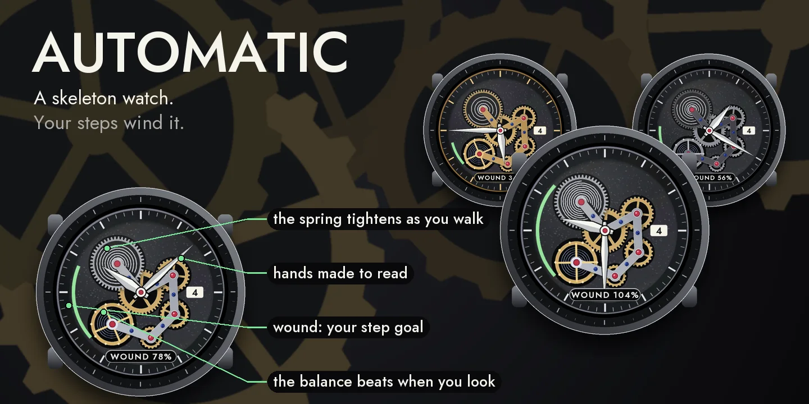
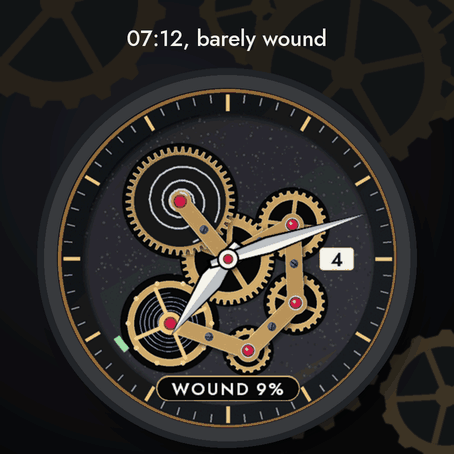
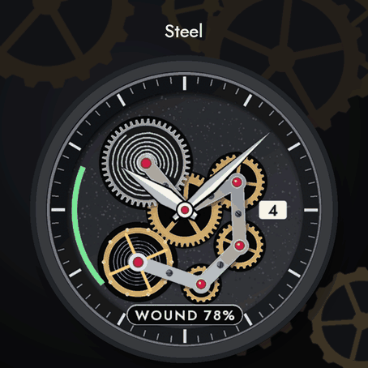
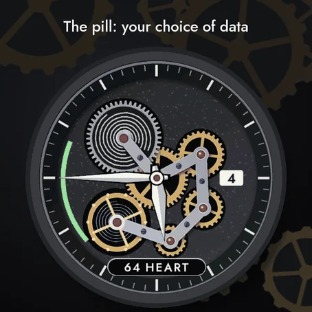
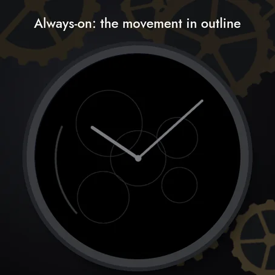
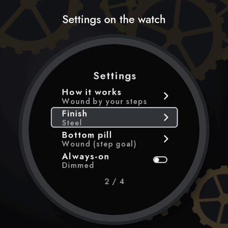

Settings on the watch
Hold UP, pick Watch Face, select Automatic, press START, then Customize. The menu shows How it works, the finish, the bottom pill and the always-on brightness. The same settings are in Garmin Connect.
Wound by your steps
A real automatic watch winds itself as you move. This one does too: your steps wind it. The dial is open on the movement, with brass gears, steel bridges, ruby jewels and blued screws. In the barrel, the mainspring tightens as you get closer to your step goal, and the green arc on the left shows how far you are. The pill at the bottom says it plainly: WOUND 78%. It starts again every morning.
A movement that lives
When you raise your wrist and the screen wakes, the balance wheel beats once a second. The other gears are part of the drawing and stay still. The large hands are made to be read over the movement, edged in black. The date sits in its window at 3 o'clock.
The pill
Wound by default, or your choice: steps, watch battery, heart rate, Body Battery, calories, floors climbed, distance, intensity minutes, notifications, temperature, the next sunrise or sunset, or altitude. If your watch has no value, it shows -- rather than a made-up number.
Three finishes
Steel, gold and black.
Always-on
A separate always-on design on a black screen: the movement in thin outline, the hands in grey and the winding arc. It shifts slightly every minute to protect the screen.
The percentage measures your step goal, nothing else: this is a watch face, not a mechanism. The face asks for the location permission for sunrise and sunset; the position never leaves the watch. Compatible with the Garmin AMOLED watches listed below. English only. Questions or a watch you would like to see supported: use the support e-mail on this page.
Font: Jost (SIL Open Font License).